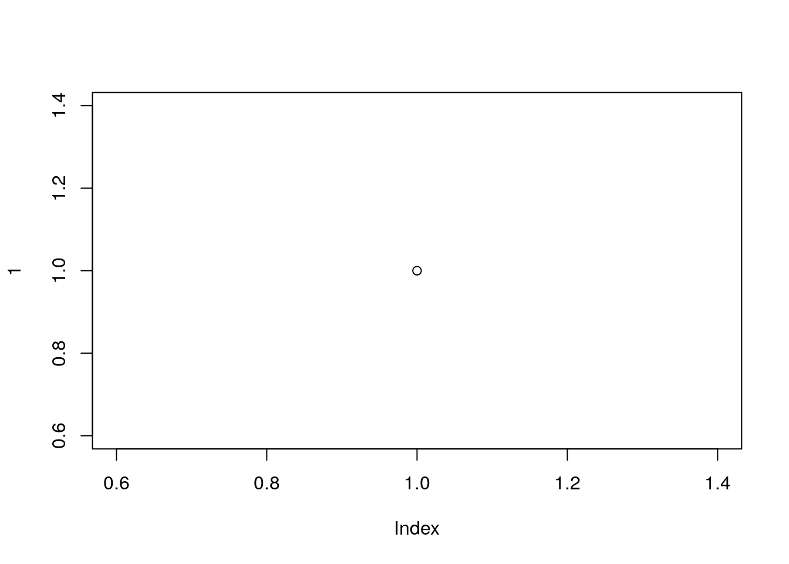

prioritizr
13 February 2017


Conservation Prioritization with Integer Programming in R
prioritizr is an R package for solving systematic conservation prioritization problems using the techniques of integer linear programming (ILP). In particular, both the minimum set cover (Marxan-like) and maximum coverage reserve design problems can be solved. The package offers a unified interface to a variety of commercial and open-source ILP solvers. In contrast to heuristic approaches, such as simulated annealing, the ILP algorithms used by prioritizr can find exact solutions to optimization problems.
plot(1)
This package is under development, please check back later.